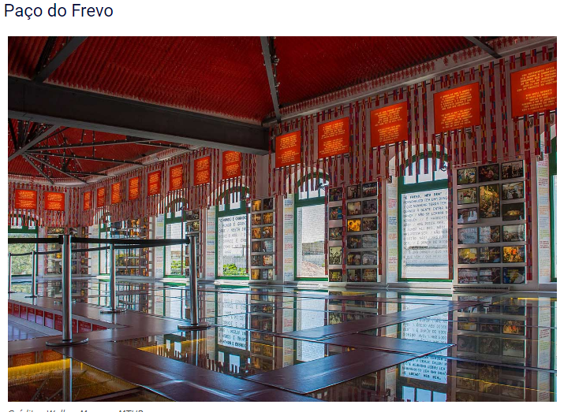

 <!DOCTYPE html>
<html lang="en"></html>
<head>
  <meta charset="UTF-8">
  <meta name="viewport" content="width=device-width, initial-scale=1.0">   
  <title>OUTROS PONTOS</title>
  <link rel="stylesheet" href="./assets/css/styles.css" />
</head>
<body>
  <section class="container">
      <header>
           
      <div>
        
         <a href="./"></a>
        <h1>OUTROS PONTOS TURISTICOS</h1>

            <nav>
              <ul class="menu">
                   <li><a href="index.html">Voltar</a></li>
                   <li><a href="https://wa.me/5514997442357">Entrar em contato</a></li>
              </ul> 
            </nav>
          </div>
      </header>   


      <div class="zero">
         
         <h3>Este parque exibe uma exposição permanente de 90 esculturas de cerâmica assinadas pelo artista plástico pernambucano Francisco Brennand.
         Construído sobre um recife, em frente ao Marco Zero, tem como obra principal, a Coluna de Cristal com 32 metros de altura, confeccionada em argila e bronze e inspirada em uma flor descoberta por Burle Marx.
         Do Marco Zero partem barquinhos que atravessam ao rio até o parque.</h3>
      </div>
      <div class="zero">
        
        <h3>A ponte da Boa Vista faz a travessia do Rio Capibaribe, no centro histórico de Recife. 
        Foi construída em 1874 com estrutura em ferro, de origem europeia. Nas 4 pilastras, 
        tem o brasão imperial e inscrições referentes à história do Brasil e de Pernambuco.
        A ponte foi parcialmente destruída por enchentes em 1965 e 1966, tendo sido restaurada em 1967</h3>
      </div>
      <div class="zero">
        
        <h3>Inaugurado em 1850, o Teatro de Santa Isabel é um raro exemplo de genuína arquitetura neoclássica da primeira metade do século XIX brasileiro. O prédio é repleto de detalhes, de grande beleza, tanto por fora, como por dentro.
        O teatro recebeu visitantes ilustres como o imperador Dom Pedro II. Foi o primeiro teatro do Brasil projetado por um engenheiro civil.
        Em 1869 o teatro foi quase todo destruído por um incêndio e teve que ser reconstruído. Foi reinaugurado em 1846 e passou por várias reformas, a última delas no ano de 2000.</h3>
      </div>
      <div class="zero">
        
        <h3>Em 2012, o Frevo foi reconhecido como Patrimônio Cultural Imaterial da Humanidade. É uma mistura da cultura africana e europeia, sendo que a expressão popular encontra no Paço do Frevo, a sua casa.
        Localizado no Recife Antigo, o complexo tem quatro pavimentos e abriga exposições, centro de documentação, e tudo que envolve esta cultura. No local há aulas de música e dança, estúdio, salas de ensaio de frevo, além de ser palco de diversas apresentações.
        </h3>
      </div>

   <footer>
  <h1>TURMA 8</h1>
  <h1>Sérgio dos&nbsp;Santos</h1><br>
  <div class="section group">
    <nav>
       <a aria-label="WhatsApp" href="https://wa.me/5514997442357"></a>
    </nav>
  </div>
</footer>
</section>
</body>
</html>